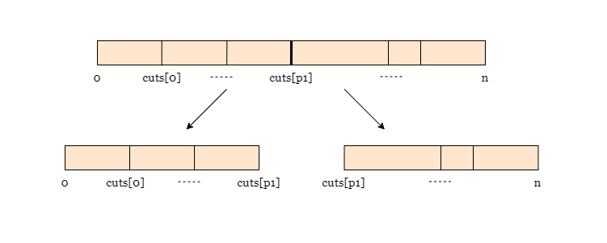
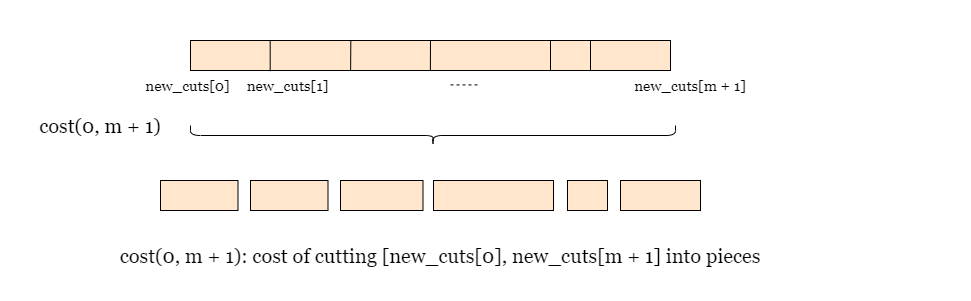
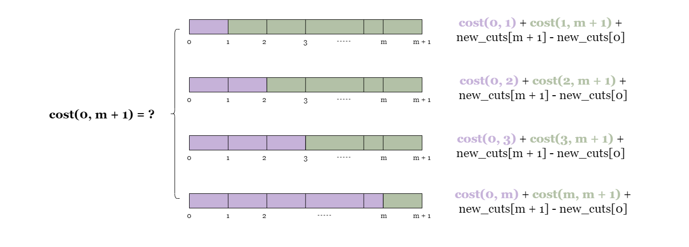
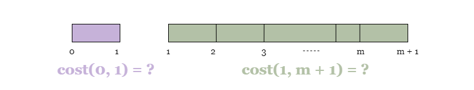
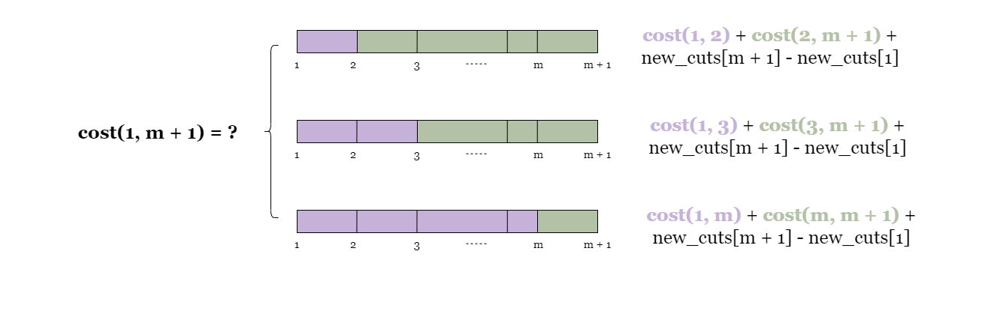
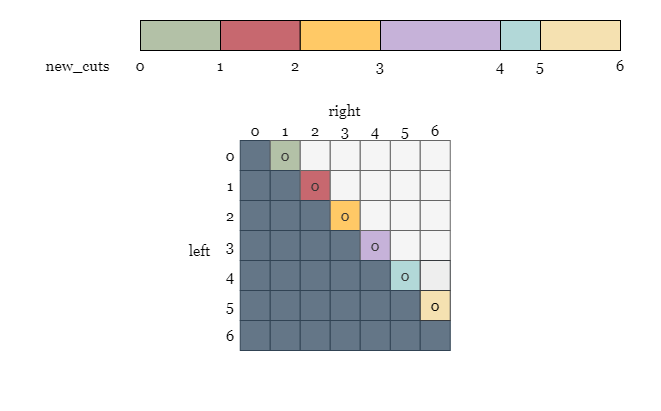
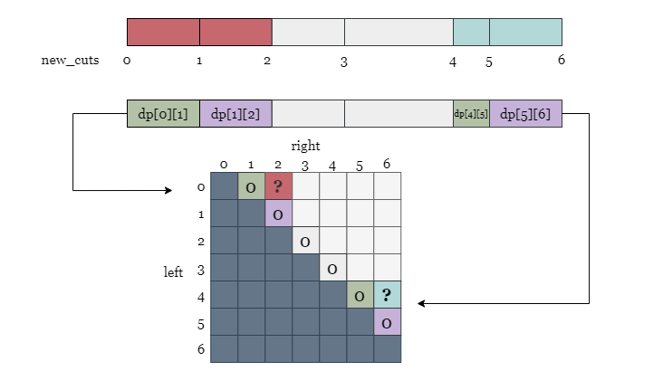
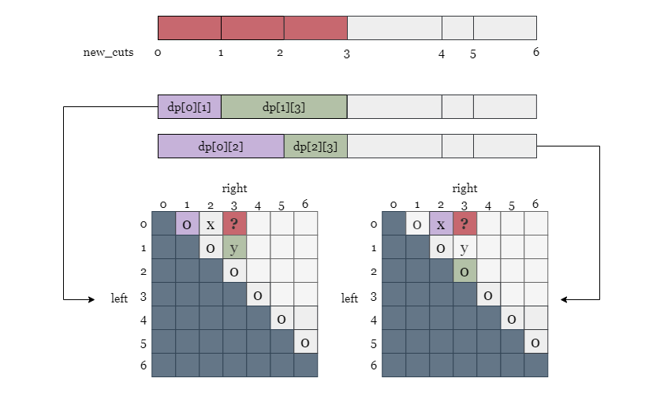

If you are not familiar with Dynamic Programming (DP), you can refer to our Dynamic Programming Explore Card
Based on observations, we can conclude that this problem exhibits optimal substructure and overlapping subproblems, which makes it an ideal candidate for dynamic programming. Every time we perform a cut, we get two new sticks. We can use dynamic programming to solve these smaller fragments optimally, then combine their costs to find the answer to the original problem.
We can consider various plans for cutting the stick into pieces, but let us begin by examining the costs and outcomes of some potential first cuts.
If we select cuts[p1] as the first cutting position, it would result in a cost of n and
split the stick into two pieces of length cuts[p1] and n - cuts[p1], respectively.

Choosing another first cutting position, say cuts[p2] would also bring a cost of n and
split the stick into two pieces of length cuts[p2] and n - cuts[p2].
We define a function cost(left, right) that returns the minimum cost of all the cuts on the stick
fragment with both ends at cuts[left] and cuts[right]. Since the two ends of the original
stick 0 and n are not included in cuts, we create a new array
new_cuts that includes these two ends and all m cutting positions in cuts.
This allows us to represent every stick fragment using two indcies from new_cuts.
The
new_cutsarray is defined asnew_cuts = [0, cuts[0], cuts[1], ..., cuts[m - 1], n](Suppose the length ofcutsism)
wherenew_cuts[0] = 0andnew_cuts[m + 1] = n
Finally, we should sortnew_cutsso that all the cutting positions are ordered.
Hence, the minimum cost of all the cuts required on the original stick can be denoted as cost(0, m + 1).

As a base case, we know cost(left, left + 1) = 0, (left < m + 1), because we do not need to continue
cutting fragments that contain no cutting positions (For example, [new_cuts[0], new_cuts[1]]).
Now let's move on to find cost(0, m + 1). No matter where we cut, we will incur a cost equal to the
length, which is new_cuts[m + 1] - new_cuts[0]. Let's see what happens when we choose cutting
positions:
If we choose new_cuts[1] as the first cutting position, we end up with two stick fragments
[new_cuts[0], new_cuts[1]] and [new_cuts[1], new_cuts[m + 1]]. This means our
overall cost will be cost(0, 1) + cost(1, m + 1) + new_cuts[m + 1] - new_cuts[0] (the cost of
cutting the two new sticks plus the cost of cutting the current stick as already established)
If we choose new_cuts[2] as the first cutting position, we end up with two stick fragments
[new_cuts[0], new_cuts[1]] and [new_cuts[1], new_cuts[m + 1]]. This means our
overall cost will be cost(0, 2) + cost(2, m + 1) + new_cuts[m + 1] - new_cuts[0]
...

There is still more work to be done: take the first scenario above, we need to compute cost(0, 1) and
cost(1, m + 1) as part of the dynamic programming process. Even though we know that cost(0, 1) =
0, we still need to determine the value of cost(1, m + 1). To do this, we will once again
try the first cut on each cutting position on the fragment [new_cuts[1], new_cuts[m + 1]]:

If we choose new_cuts[2] as the first cutting position, we end up with a cost of new_cuts[m
+ 1] - new_cuts[1] and two stick fragments [new_cuts[1], new_cuts[2]] and [new_cuts[2],
new_cuts[m + 1]], thus the overall cost would be cost(1, 2) + cost(2, m + 1) + new_cuts[m + 1]
- new_cuts[1]
If we choose new_cuts[3] as the first cutting position, we end up with a cost of new_cuts[m
+ 1] - new_cuts[1] and two stick fragments [new_cuts[1], new_cuts[3]] and [new_cuts[3],
new_cuts[m + 1]], thus the overall cost would be cost(1, 3) + cost(3, m + 1) + new_cuts[m + 1]
- new_cuts[1]
...

At every state of cost, we need to try all possible cuts and take the one with the lowest cost.
Once the cost function cost and memoization table dp are defined, the problem can be solved
by invoking the cost function with the initial subproblem of cutting the stick. The cost function will recursively
compute the minimum cost of cutting the stick between any two adjacent points in the cuts list.
To prevent repetitive computation and improve performance, we can create a dictionary or a 2D array dp
and store the solution of each solved subproblem cost(left, right) in the memoization table.
Build an array new_cuts that contains the ends of the stick and all cutting positions sorted:
new_cuts = [0, cuts[0], cuts[1], ..., cuts[m - 1], n].
Initialize a hash map or 2D array dp as memory.
Define cost(left, right) as minimum cost of all the cuts on the stick fragment with both ends at
new_cuts[left] and new_cuts[right]:
right - left = 1, return 0.cost(left, right) before, return the saved answer.answer = infinity.new_cuts[left] and new_cuts[right], update
answer as answer = min(answer, cost(left, mid) + cost(mid, right) + new_cuts[right] -
new_cuts[left]).
answer in dp and return answer.Return cost(0, new_cuts.length - 1).
Java
class Solution {
int[][] memo;
int newCuts[];
private int cost(int left, int right) {
if (memo[left][right] != -1) {
return memo[left][right];
}
if (right - left == 1) {
return 0;
}
int ans = Integer.MAX_VALUE;
for (int mid = left + 1; mid < right; mid++) {
int cost = cost(left, mid) + cost(mid, right) + newCuts[right] - newCuts[left];
ans = Math.min(ans, cost);
}
memo[left][right] = ans;
return ans;
}
public int minCost(int n, int[] cuts) {
int m = cuts.length;
newCuts = new int[m + 2];
System.arraycopy(cuts, 0, newCuts, 1, m);
newCuts[m + 1] = n;
Arrays.sort(newCuts);
memo = new int[m + 2][m + 2];
for (int r = 0; r < m + 2; ++r) {
Arrays.fill(memo[r], -1);
}
return cost(0, newCuts.length - 1);
}
}
Python3
class Solution:
def minCost(self, n: int, cuts: List[int]) -> int:
memo = {}
cuts = [0] + sorted(cuts) + [n]
def cost(left, right):
if (left, right) in memo:
return memo[(left, right)]
if right - left == 1:
return 0
ans = min(cost(left, mid) + cost(mid, right) + cuts[right] - cuts[left] for mid in range(left + 1, right))
memo[(left, right)] = ans
return ans
return cost(0, len(cuts) - 1)
<Let mm
be the length of the input array cuts.
The number of states in our DP is the number of possible combinations of (left, right), which is O(m2)O(m^2) subproblems. For each subproblem cost(left,
right), we need to try all possible cutting positions between new_cuts[left] and new_cuts[right],
resulting in an additional factor of mm. Therefore, the overall time complexity is
O(m3)O(m^3).
Space complexity: O(m2)O(m^2)
The problem can also be solved iteratively, starting from the minimum cost of cutting stick fragments that do not contain any cutting positions, then moving on to fragments with one cutting position, and finally obtaining the optimal cost of cutting the entire stick.
To accomplish this, we can use a two-dimensional array dp to store the minimum cost of cutting each
stick fragment, where dp[left][right] represents the minimum cost of cutting the stick fragment [new_cuts[left],
new_cuts[right]]. This is equivalent to what the call cost(left, right) returned in the
previous approach.
To build up the table, we start with stick fragments that contain no cutting position, and gradually increasing the
number of cutting positions. For each subproblem on the stick fragment [new_cuts[left],
new_cuts[right]], we try all possible cutting positions mid between the exclusive range of
(left, right) and store the minimum cost in dp[left][right].
Starting with fragments that contains no cutting positions, the cost of cutting these fragments is 0 since there is no need to cut them anymore.

Next, we move on to stick fragments that contain only one cutting position. For example, the two fragments colored in red and blue in the picture below. Since each of them only contains one cutting position, there is only one possible minimum cost for each:
dp[0][2] = dp[0][1] + dp[1][2] + new_cuts[2] - new_cuts[0].
dp[4][6] = dp[4][5] + dp[5][6] + new_cuts[6] - new_cuts[4].

We move on to stick fragments that contain 2 cutting positions, for example, the fragment [new_cuts[0],
new_cuts[3]]. Since this fragment contains two cutting positions new_cuts[1] and new_cuts[2],
the optimal cost dp[0][3] can be computed as the minimum cost among the following two possibilities:
dp[0][3] = dp[0][1] + dp[1][3] + new_cuts[3] - new_cuts[0]dp[0][3] = dp[0][2] + dp[2][3] + new_cuts[3] - new_cuts[0]
After computing the minimum cost for every subproblem, we can finally obtain the minimum cost of cutting the entire
stick by returning the value stored in dp[0][m + 1].
Build a sorted array new_cuts that contains the two ends of the original stick and
m cutting positions: new_cuts = [0, cuts[0], cuts[1], ..., cuts[m - 1], n].
Initialize an all-zeros 2D array of size (m + 1) * (m + 1).
Iterate over the number of cutting positions diff of stick fragments from 2 to
m + 1.
For each diff, we iterate over each stick with the left end's position as
new_cuts[left]. The right ends' position of the stick is new_cuts[right] = new_cuts[left
+ diff].
Set the minimum cost dp[left][right] = infinity. We iterate over every cutting position in
(left, right). For each cutting position mid, we update
dp[left][right] as min(dp[left][right], dp[left][mid] + dp[mid][right] + new_cuts[right]
- new_cuts[left]).
Return dp[0][m + 1] when the nested iteration is complete.
Java
class Solution {
public int minCost(int n, int[] cuts) {
int m = cuts.length;
int[] newCuts = new int[m + 2];
System.arraycopy(cuts, 0, newCuts, 1, m);
newCuts[m + 1] = n;
Arrays.sort(newCuts);
int[][] dp = new int[m + 2][m + 2];
for (int diff = 2; diff < m + 2; ++diff) {
for (int left = 0; left < m + 2 - diff; ++left) {
int right = left + diff;
int ans = Integer.MAX_VALUE;
for (int mid = left + 1; mid < right; ++mid) {
ans = Math.min(ans, dp[left][mid] + dp[mid][right] + newCuts[right] - newCuts[left]);
}
dp[left][right] = ans;
}
}
return dp[0][m + 1];
}
}
Python3
class Solution:
def minCost(self, n: int, cuts: List[int]) -> int:
m = len(cuts)
cuts = [0] + sorted(cuts) + [n]
dp = [[0] * (m + 2) for _ in range(m + 2)]
for diff in range(2, m + 2):
for left in range(m + 2 - diff):
right = left + diff
ans = float('inf')
for mid in range(left + 1, right):
ans = min(ans, dp[left][mid] + dp[mid][right] + cuts[right] - cuts[left])
dp[left][right] = ans
return dp[0][m + 1]
Time complexity: O(m3)O(m^3)
The number of states in our DP is the number of possible combinations of (left, right),
which is O(m2)O(m^2). For each subproblem dp[left][right],
we need to try all possible cutting positions between new_cuts[left] and new_cuts[right],
which is right - left - 1, resulting in an additional factor of mm. Therefore, the overall time
complexity is O(m3)O(m^3).
Space complexity: O(m2)O(m^2)